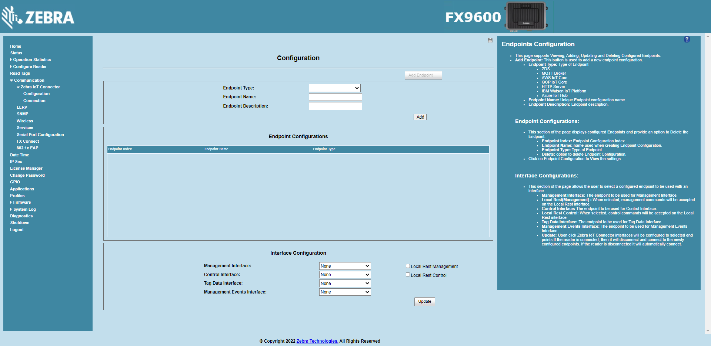
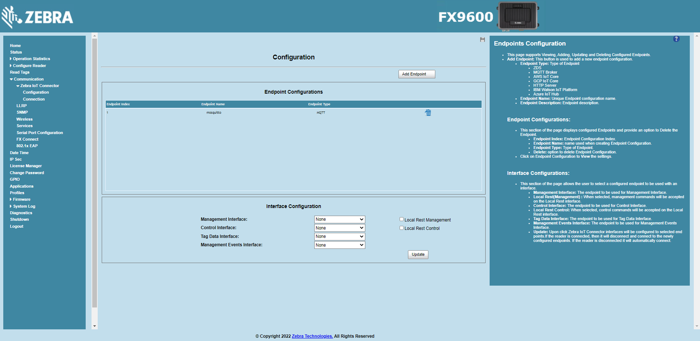

Introduction¶
This section guides user to setup Zebra IoT Connector for various deployment modes discussed at section.
Setting up Zebra IoT Connector is three step process:
Add endpoint configuration.
Configure interfaces to appropriate endpoints.
Start IoT Connector Service.
Web Interface¶
The Zebra IoT Connector can be configred using the reader web UI.
Open a web browser to connect to the reader using the host name or IP address.
The configuration page is used for configuring ZIoTC endpoints and interfaces.
Click Communication > Zebra IoT Connector > Configuration.
Using this page user can
Add,View,Update, andDeleteendpoint configurations.Endpoint Configuration can be added by clicking
Add Endpointbutton. currently reader supports following endpoints.ZDS (Zebra Data Services).
MQTT Broker.
HTTP Server.
AWS IoT Core.
GCP IoT Core.
IBM Watson IoT Platform.
Azure IoT Hub.
Current configured endpoints will be displayed under Endpoint Configurations section.
Endpoint Configuration can be updated by clicking on the endpoint configuration row.
Endpoint Configuration can be deleted by clicking on the delete icon in the endpoint configuration row.
The current interface configuration will be displayed under Interface Configuration section.
Interface configuration can be updated by selecting appropriate endpoint from droupdown and clicking
Updatebutton.
The connection page is used to connect, disconnect, enabling auto connect and viewing current Interface Connection Status.
Click Communication > Zebra IoT Connector > Connection.

The
ConnectandDisconnectbutton is used to start and stop the Zebra IoT Connector services.The
Auto Connectcheck box is used to configure the Zebra IoT Connector services status on a reboot.The Connection Status section displays the current interface
Connection StatusandConnection Errorinformation incase of an issue.
Add endpoint configuration¶
This section guides user to add an MQTT and HTTP Post endpoint configurations.
MQTT Endpoint¶
Note
An open source online MQTT Broker hosted at test.mosquitto.org will be used for this tutorial.
Open a web browser to connect to the reader using the host name or IP address.
Click Communication > Zebra IoT Connector > Configuration.
Click on
Add Endpointbutton to add new endpoint.Select
MQTTfor Endpoint Type.Configure Endpoint Name and Endpoint Description fileds.
Configure Connection, Topics and Certificates sections.
Configure
Server,Port,Protocol,Client Id,Clean Session,Basic Authentication, andKeep Aliveparameters under Connection section.Click on Topics to configure topics to be used for Management, Control, Health and Tag Data Interfaces.
Click on
Addbutton to add endpoint.
HTTP POST Endpoint¶
Note
An open source online HTTP server hosted at webhook.site will be used for this tutorial.
Open a web browser to connect to the reader using the host name or IP address.
Click Communication > Zebra IoT Connector > Configuration.
Click on
Add Endpointbutton to add new endpoint.Select
HTTP POSTfor Endpoint Type.Configure Endpoint Name and Endpoint Description fileds.
Configure Connection and Certificates sections.
Configure
URL,Verify Host,Verify PeerandAuthentication Typeparameters under Connection section.Click on
Addbutton to add endpoint.
Configure Interfaces¶
Open a web browser to connect to the reader using the host name or IP address.
Click Communication > Zebra IoT Connector > Configuration.
Select mosquitto endpoint for Management Interface, Control Interface, and Management Events Interface.
Select webhooksite endpoint for Tag Data Interface.
Click on
Updatebutton to update interface configuration.
Start ZIoTC Service¶
Open a web browser to connect to the reader using the host name or IP address.
Click Communication > Zebra IoT Connector > Connection.
Click on
Connectbutton.Once connected the current connection status of the interfaces will be displayed under Connection Status section.